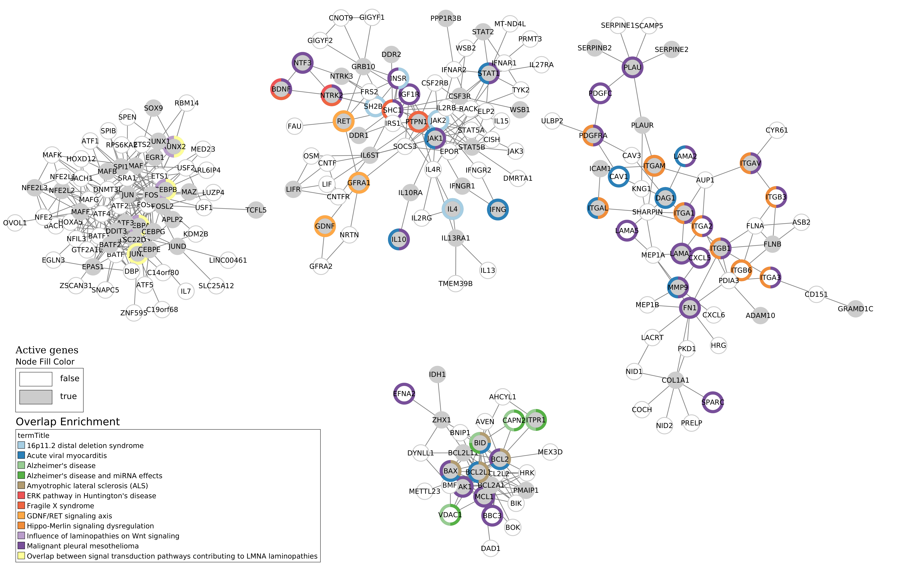

Example 1 : request analysis¶
Study the link between vitamin A and rare diseases Request directly CTD database and WikiPathways. User gives only the MeSH ID of Vitamin A to the script and can perform three different methods.
Overlap analysis¶
The InputFile_factorsList.csv file contains the MeSH ID of vitamin A. We want to find target of vitamin A and of its descendant molecules.
So, the --directAssociation parameter is set to False.
Only the interaction between vitamin A (and related molecules) and genes with at least two publications are kept (--nbPub 2).
Results files are saved into examples/OutputResults_example1/ folder.
python3 main.py overlap --factorList examples/InputData/InputFile_factorsList.csv \
--directAssociation FALSE \
--nbPub 2 \
--outputPath examples/OutputResults_example1/
Several files are generated :
CTD_request_D014801_2022_08_11.tsvandCTD_requestFiltered_D014801_2022_08_11.tsv: the first file contains results from CTD request and the second one contains the filtered (by paper number) results.WP_RareDiseases_request_2022_08_11.gmtandWP_allPathways_request_2022_08_11.gmt: the first file contains all the human rare diseases pathways from WikiPathways request and the second file contains all the human pathways which are in WikiPathways.Overlap_D014801_withRDWP.csv: results of the overlap analysis between targeted genes and rare diseases pathways
If you want to have more details about theses files go to : BLABLABLA
Results
request on the 11th of August 2022
Request : - 10 molecules (vitamin A + 9 descendants) - 7 766 genes linked
Filtered request : - 7 molecules (vitamin A + 6 others) - 2 143 genes linked
102 rare diseases pathways (between 2 and 436 genes)
1 261 human pathways (between 1 and 484 genes)
target genes overlap significantly 34 RD pathways
1726 genes are found (and used) in the WikiPathways background
Top 5 :
PathwayIDs |
PathwayNames |
pAdjusted |
IntersectionSize |
|---|---|---|---|
WP5087 |
Malignant pleural mesothelioma |
3.663e-24 |
146 |
WP4298 |
Acute viral myocarditis |
9.183e-16 |
45 |
WP2447 |
Amyotrophic lateral sclerosis (ALS) |
1.020e-11 |
25 |
WP5053 |
Development of ureteric collection system |
2.557e-08 |
28 |
WP4879 |
Overlap between signal transduction pathways … |
7.638e-07 |
25 |
On a previous analysis (Ozisik et al., 2022), an overlap analysis was made between genes targeted by vitamin A and CAKUT pathways. Three of the four pathways related to CAKUT overlaping target genes are found in this analysis :
PathwayIDs |
PathwayNames |
pAdjusted |
IntersectionSize |
|---|---|---|---|
WP5053 |
Development of ureteric collection system |
2.557e-08 |
28 |
WP4830 |
GDNF/RET signaling axis |
1.95e-05 |
13 |
WP4823 |
Genes controlling nephrogenesis |
8.55e-05 |
18 |
Active Module Identification : DOMINO¶
As before, we want to extract target genes of vitamin A and its related molecules with at least two references about this link
(–directAssociation False` and --nbPub 2).
With this method, we will search active modules (extend our target list to other link genes) using a protein-protein
interaction network (PPI_network_2016.sif). Then, for each active module identified, an overlap analysis will made
against the rare disease pathways from WikiPathways.
Results files are saved into examples/OutputResults_example1/ folder.
python3 main.py domino --factorList examples/InputData/InputFile_factorsList.csv \
--directAssociation FALSE \
--nbPub 2 \
--networkFile examples/InputData/PPI_network_2016.sif \
--outputPath examples/OutputResults_example1/
Several files are generated :
CTD_request_D014801_2022_08_11.tsvandCTD_requestFiltered_D014801_2022_08_11.tsv: the first file contains results from CTD request and the second one contains the filtered (by paper number) results.WP_RareDiseases_request_2022_08_11.gmtandWP_allPathways_request_2022_08_11.gmt: the first file contains all the human rare diseases pathways from WikiPathways request and the second file contains all the human pathways which are in WikiPathways.DOMINO_inputGeneList_D014801.txt: list of genes used for the AM identificationOverlap_AM_*_D014801_withRDWP.csv: results of the overlap analysis between targeted genes and rare diseases pathways. One file for each AM.DOMINO_D014801_activeModulesNetwork.txt,DOMINO_D014801_overlapAMresults4Cytoscape.txt,DOMINO_D014801_activeModules.txtandDOMINO_D014801_activeModulesNetworkMetrics.txt: some metrics are calculated and saved into files. Theses files are useful for visualisation.
If you want to have more details about theses files go to : BLABLABLA
Results :
Request :
10 molecules (vitamin A + 9 descendants)
7 766 genes linked
Filtered request :
7 molecules (vitamin A + 6 others)
2 143 genes linked
102 rare diseases pathways (between 2 and 436 genes)
1 261 human pathways (between 1 and 484 genes)
2 143 genes inside the DOMINO input genes list
13 Active modules (between 93 and 28 nodes)
(see DOMINO_D014801_activeModulesNetworkMetrics.txt file)
7 Active modules overlap significantly genes list
There are the significant results :
termID |
termTitle |
|---|---|
WP2059 |
Alzheimer’s disease and miRNA effects |
WP2447 |
Amyotrophic lateral sclerosis (ALS) |
WP3853 |
ERK pathway in Huntington’s disease |
WP4298 |
Acute viral myocarditis |
WP4541 |
Hippo-Merlin signaling dysregulation |
WP4549 |
Fragile X syndrome |
WP4746 |
Thyroid hormones production and peripheral downstream signaling effects |
WP4823 |
Genes controlling nephrogenesis |
WP4830 |
GDNF/RET signaling axis |
WP4844 |
Influence of laminopathies on Wnt signaling |
WP4879 |
Overlap between signal transduction pathways contributing to LMNA laminopathies |
WP4950 |
16p11.2 distal deletion syndrome |
WP5087 |
Malignant pleural mesothelioma |
WP5124 |
Alzheimer’s disease |
Visualisation :
DOMINO visualisation using Cytoscape :
Import Network from File :
DOMINO_D014801_activeModulesNetwork.txtImport Table from File :
DOMINO_D014801_activeModules.txtOmics Visualizer table from File :
DOMINO_D014801_overlapAMresults4Cytoscape.txt- Manage table connectionslink network and the previous table
Network : sharedname
Table : geneSymbol
Donut Chart Visualization : Add overlap results using donuts (Use TermID)
- Style :
Border Width = 5.0
Fill Color = ActiveGenes True #CCCCCC False #FFFFFF
Label Font = 20
Shape = Circle
Lock node width and height
Size = 50
Filter : Select nodes with overlapSignificant = True
New Network : From Selected Nodes, All Edges
Add legends using Omics Visualizer and Legend Creator
To know how the network was made, go to : BLABLA
{kind=link}
Random Walk with Restart : multiXrank¶
Example - Up to date Vitamin A analysis¶
Link between environmental factor and rare disease pathways: Vitamin A use-case
Biological context¶
Input data¶
Overlap analysis¶
Active Module Identification : DOMINO¶
Random Walk with Restart : multiXrank¶
cut -f3 CTD_request_D014801_2022_08_11.tsv | sort | uniq cut -f5 CTD_request_D014801_2022_08_11.tsv | sed ‘1d’ | sort | uniq | wc -l cut -f3 CTD_requestFiltered_D014801_2022_08_11.tsv | sort | uniq cut -f5 CTD_requestFiltered_D014801_2022_08_11.tsv | sed ‘1d’ | sort | uniq | wc -l
sed ‘1d’ WP_allPathways_request_2022_08_11.gmt | wc -l awk -F”t” ‘{if($1!=”WPID”){print $1”t”NF-2}}’ WP_RareDiseases_request_2022_08_11.gmt | sort -k2 -n awk -F”t” ‘{if($1!=”WPID”){print $1”t”NF-2}}’ WP_allPathways_request_2022_08_11.gmt | sort -k2 -n sed ‘s/;/t/g’ Overlap_D014801_withRDWP.csv | cut -f1,2,3,4,5,6,7,8,9 | awk -F’t’ ‘{if($9<=0.05){print $0}}’
cut -f2 DOMINO_D014801_overlapAMresults4Cytoscape.txt | sort | uniq cut -f3,4 DOMINO_D014801_overlapAMresults4Cytoscape.txt | sort | uniq | sed ‘s/t/;/g’ > forHTML.csv